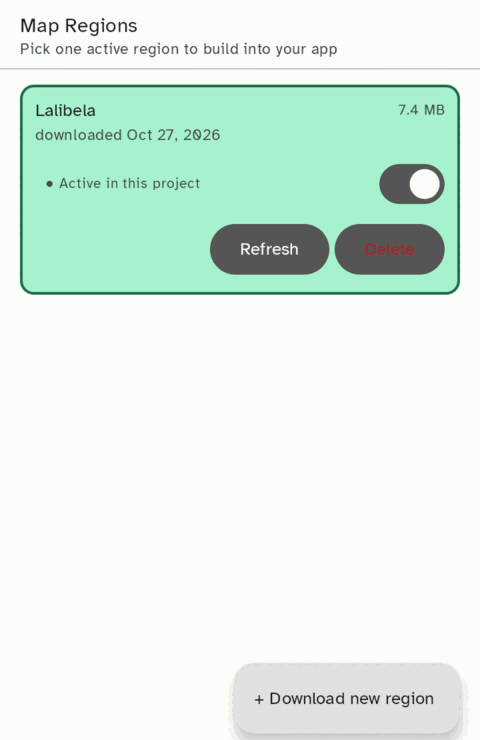
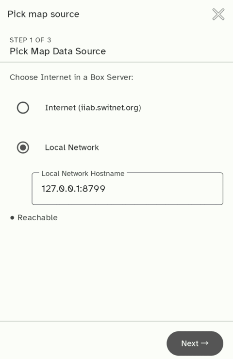
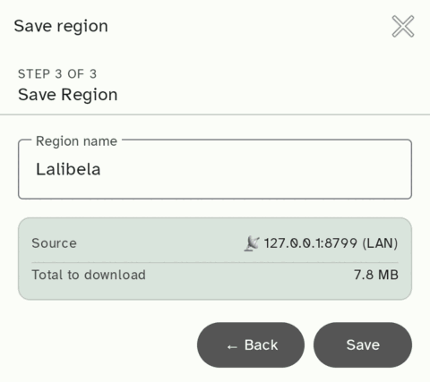
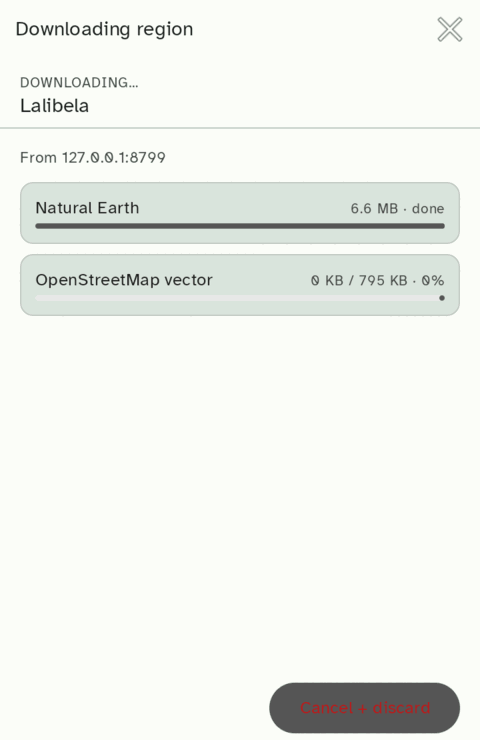

This is the Tier 3 tutorial that ships with the Maps plugin. The plugin helps you build offline mapping apps: you save an OpenStreetMap region for offline use — downloaded from an Internet in a Box server, either over the internet or over a local LAN — and the plugin scaffolds an app that renders that region with no connectivity required afterward. The whole point is field work in low-bandwidth regions, where the only sustainable map is one that already lives on the phone.
This tutorial walks the three pieces that make that work, in the order they come into play: Internet in a Box (where the data lives), OpenStreetMap (what the data is), and MapLibre (what draws it).
Open a project made from the Offline OSM Map template, then tap the Maps tab in the editor's bottom sheet. Long-press any button on these screens for a short explanation.
Each row is a region saved on this phone, under
/sdcard/CodeOnTheGo/maps/. A saved region can be used by any number of
projects, so you download it only once.

app/src/main/assets/maps/ folder and makes it the region the
app shows. The row then turns green and reads ● Active in this
project. One region is active at a time: turning on another one switches
to it.
iiab.switnet.org. This is always selected when the step opens.Drag the box to move it, and drag a corner to resize it. Pan and zoom the map to find your area.


Internet in a Box (IIAB) is an open-source project that packages a library of the internet's most useful content — Wikipedia, educational courseware, medical references, and maps — onto an inexpensive device (often a Raspberry Pi) that serves it over local WiFi. A community without reliable or affordable internet plugs in the box and browses the content from any phone or laptop on the local network. App Dev For All works with IIAB as a distribution partner, so an IIAB server is the natural place this plugin looks for map data. (Source on GitHub: iiab/iiab.)
An IIAB server can be reached two ways, and this plugin supports both:
iiab.switnet.org).What mapping data lives on an IIAB server? IIAB's maps content is OpenStreetMap-derived:
.pmtiles. They're usually shipped as
regional extracts (a country or area), though a well-stocked
box can carry much larger coverage.The rest of this tutorial unpacks each layer.
OpenStreetMap (OSM) is a free, public-domain map of the world built and maintained by volunteers. Unlike Google Maps or Apple Maps, the underlying data — every road, building, river, hospital, school — is available for download and can be bundled into your app for offline use. That is the whole reason this plugin exists: in low-bandwidth regions where many of App Dev For All's users do field work, the only sustainable map is one that already lives on the phone.
Two important things to know up front:
key=value tag describing what it is:
amenity=hospital, highway=primary,
place=village, shop=bakery. There's no rigid schema
— the OSM
wiki documents the conventions but anyone can invent a new tag. When you
write a query against OSM, you write it against tags..pmtiles
archive (a cloud-optimized format that supports HTTP range reads, so one file
serves any zoom/region without a tile server). Raw OSM data, if you ever need
it, lives in .osm.pbf extracts. Your generated app renders the
PMTiles tiles directly, including the place-name and street-name labels carried
in the vector tiles.MapLibre is the open-source Android library that draws the map. The IDE
template adds a MapView to your activity_map_region.xml;
the library is responsible for rendering tiles at the right zoom level, handling
pinch-to-zoom and pan gestures, and drawing markers / lines / polygons on
top.
The template wires up the minimum:
MapLibre.getInstance(this) — initialises the renderer
(must run before setContentView)MapView — the actual map widgetmapView.onCreate / onStart / onResume / onPause / onStop /
onLowMemory / onDestroy / onSaveInstanceState — every Activity
lifecycle callback must be forwarded to the
MapView. Skipping any of these leaks GPU memory or crashes the
renderer.style.json in assets/maps/ — tells
MapLibre where to fetch tiles and how to draw them.The generated app renders one bundled region, served from
inside the APK. The tiles arrive from an Internet in a Box server
(see above) through the IDE bottom-sheet Maps tab: open it, pick
a region with the bbox picker, and download it — the plugin range-fetches
the region's tiles from the IIAB server (the public iiab.switnet.org
by default, or a local-LAN box) into
/sdcard/CodeOnTheGo/maps/<region-id>/. When you turn on a
region's switch, the plugin copies that region's
data files (tiles.pmtiles, basemap.pmtiles,
meta.json) into the project's fixed
app/src/main/assets/maps/ folder, overwriting any previous region.
That's the whole apply step — a pure data copy. The code, style, manifest,
and Gradle wiring already ship in the project.
How the bundled tiles render. MapLibre 13.x on Android
(OpenGL ES variant) only reliably dispatches the pmtiles://http://...
URL scheme. pmtiles://asset:///… and
pmtiles://file:///… do not work reliably in
this app — don't use them. So the generated app runs a tiny
in-process loopback HTTP server (PmtilesHttpServer)
on 127.0.0.1 that serves the bundled PMTiles assets with HTTP Range
support, and the MapRegionActivity substitutes
pmtiles://http://127.0.0.1:<port>/maps/tiles.pmtiles into the
style at runtime.
The generated app runs on 64-bit and 32-bit ARM phones. Its bundled copy of
MapLibre carries native code for arm64-v8a and
armeabi-v7a; the x86 libraries are left out to keep the offline
repository small, so the app does not run on an x86 emulator.
The loopback server has no authentication, so any other app on the phone can read from its port while your app is running. That is fine for map tiles, which are public data; do not reuse it to serve anything private.
This requires the PMTiles to be stored uncompressed in the APK —
androidResources { noCompress.add("pmtiles") }, already set in
build.gradle.kts — so the loopback server can seek into them.
No internet is needed once a region is bundled.
If you want to bundle a region by hand instead of using the Maps tab, drop the
data files into app/src/main/assets/maps/ (tiles.pmtiles
+ basemap.pmtiles + a meta.json with the region's
bbox) and rebuild. You can build a .pmtiles archive
yourself:
pmtiles CLI:
pmtiles convert region.mbtiles region.pmtiles)..osm.pbf extracts you process server-side via
tilemaker (emit MBTiles, then convert to PMTiles).| Tag | Meaning |
|---|---|
amenity=hospital, =clinic, =pharmacy | Health |
amenity=school, =university, =library | Education |
amenity=drinking_water, man_made=water_well | Water |
shop=* | Retail of any kind |
place=village, =town, =city | Populated places |
highway=primary, =secondary, =tertiary, =track | Roads, by importance |
leisure=park, landuse=forest | Open space |
The full reference is at OSM Wiki: Map features.
talk-{country}@openstreetmap.org